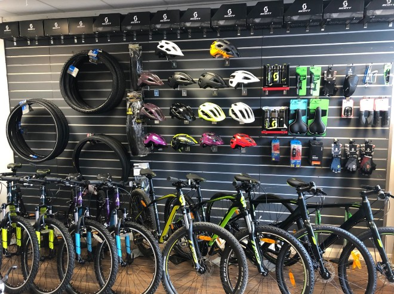

This retail analysis delves into the sales performance of Supermart, a leading grocery store chain in India, to uncover actionable insights aimed at enhancing revenue and customer satisfaction. The primary objective of this analysis is to identify key trends, patterns, and opportunities within Supermart's sales data, empowering stakeholders to make informed strategic decisions.


This data analysis project aims to provide insights into factors that influences the budget and gross revenue for all the movies in the industry. By analyzing these various factors, we seek to identify trends and patterns to make data-driven recommendations and gain deeper understanding of the how these factors influences the movie industry.

In this project I explored Covid-19 data with SQL Server.The purpose of this data exploration is to gain a deeper understanding of the Covid-19 pandemic through quantitative analysis of the available data.

I created interactive dashboards using Tableau Desktop on projects like Sample Sales Superstore and, British Airways Reviews and i visualized some of the outputs gotten from the Covid-19 Data Exploration with SQl.
In this project, i performed thorough cleaning on Nahville's Raw Housing data with SQL for future analysis. I populated some null values in some columns with the right values, removed duplicates, created new columns which made it easier for analysis.
This project aims to provide insights on the purchasing power of customers on the sales of coffee based on the types, roast type, and their respective sizes. I visualized all my insights using charts and graphs and i created an outstanding interactive dsashboard to facilitate data-driven recommendations and decision making.

The purpose of this project is to uncover insights and trend of cutomer behaviours on the purchasing power of bikes based on their Monthly Income, Commute Distances, and Age. All these factors can be very useful in uncovering insights of how and why cutomers purchased a bike or not. We can also filter such factors based on their Marital Status, Education, and Region.